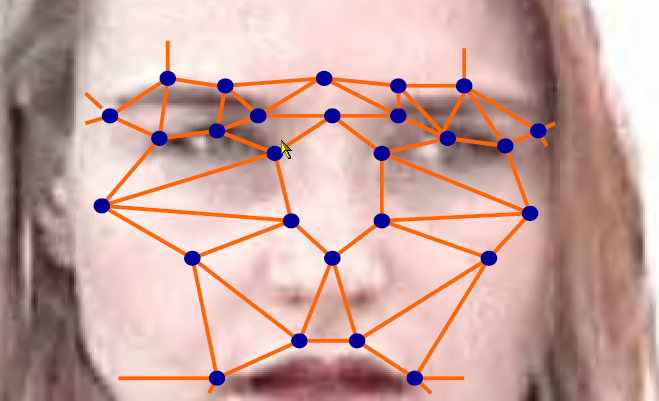

In Part I, I covered the basic premise of the e-Passport. The International Civil Aviation Organization and Interpol have collaborated to create a universally accepted and trackable passport with biometrics stored in the RFID chip embedded into the passport. Fifty million e-Passports are already in circulation, and most people don’t know they have them. The US is already issuing them. Most of the EU will be issuing them next year. And by 2010, all 189 member nations will be issuing e-Passports to international travelers. In this part, we cover the biometrics in the passport, a digital photo of your face.
Two years ago the community was up in arms over the idea that a chip in a passport would contain an iris pattern or a retina pattern or even a DNA pattern for anyone to scan. And then that faded out and it appeared to be scaled back to a simple digital version of the photograph of the bearer stored in it. And that is exactly true. Doesn’t seem insidious at all, really. But there are reasons, very good reasons, why there is a photo instead of a fingerprint or an iris scan in the chip data. And that’s because your face is a biometric. Not only is it a biometric it is the universal biometric standard of the human race. Every day you yourself use facial recognition to identify people. You don’t need a computer, special training or even working eyeballs (ask a blind person to identify you by touch).
Facial recognition technology has quietly matured to the point where software can scan live video feeds in real-time, find faces in the video stream, capture them, and match them against photographs in databases in merely a few seconds. I was shown a demonstration where software was real-time scanning and matching multiple people walking across a lobby. A large LCD display showed the video stream with little red boxes zooming in on heads, freezing good frames whenever the software detected a face turned towards the camera, and a second computer monitor was matching up to six faces simultaneously to a database of photographs. I matched someone in their test database at 54%. A low match, for certain, but if the tolerance is turned up to 80% agents have a reliable method of determining if you look close enough to a wanted person to be stopped for questioning.
The company doing this demonstration told me they recently implemented the system at the 2006 US Open golf tournament, where their camera scanned crowds and incoming fans’ faces and matched them against criminal watch lists. They had probable matches on 23 people, and ended up refusing entry to three of them.
Their software is production worthy, not a beta-test or a concept or a trial run. Write them a check, and they’ll plug it in for you wherever you like. They even had some great suggestions for capturing close up images for even better profiling, such has hiding cameras at eye level behind seductive advertising. Even a quick glance up to the boobs in your face gets your head framed perfectly for capture and matching to the photographic databases.
No problem, you say. You’ll just grow a beard and get a tan. Sorry, but superficial facial features are given superficial weight. The key features facial recognition uses are written in bone structures. Good luck changing the size of your eye sockets, the distance between your eyes, the width of your head, or the corners of your mouth without having your skull smashed by a Freightliner first. I suspect your best bet at foiling these cameras requires stealing an idea from Claire Wolfe’s book, Rebelfire: Out of the Gray Zone, and start a fashion trend in wide-brimmed floppy hats.
|
 |
The blue dots indicate features the software looks for. The orange lines are the measurements it takes to plot your face’s unique characteristics.iv |
|
|
|
|
|
Of course, when you enter a place where you are presumed to volunteer your face for biometric examination, you will be required to remove hats and facial coverings (except prescription eye-glasses, as the software compensates for those). So a wide-brimmed floppy hat will be great at the basketball game, but won’t do you any good checking in for your flight, bus, or train.
And this is established technology. What’s next? Since facial recognition works by plotting distances between key features, such as the center of the eyes, it is merely an application of formula to take those measurements into three dimensions, thus allowing for facial recognition software to compensate for distance, rotation, and tilt of the head. That’s right, 3-D facial recognition is on the very near horizon. There are some sweaty little programmers working on it right now.
And here’s the fun, fun, fun part of why facial recognition was chosen to be the biometric standard around the world. How many of you readers have had an iris scan taken? Anybody? Bueller? What about fingerprints? Okay, a few more of you. Has the government ever take a photo of you? Maybe before you woke up to freedom? Driver’s license? Old passport? Mug shot? See what I mean? It’s an obvious choice when you consider the costs of enrolling the world into an iris scan. Chances are, they already have a mostly viable photograph of you on file. It is an elegant convergence of technology and opportunity. An e-Passport reader demo I viewed scanned the passport, pulled the physical image up, scanned the chip and pulled the digital image up, placed the two side by side for comparison, verified they were identical, took a picture of the person standing in front of them, used facial recognition to compare the person to the pictures, all while comparing the pictures to a watch-list database for a match. Four points of comparison keyed on one photograph, with three comparison methods engaged: visual comparison by the operator, one-to-one match against the photos on the passport, and one-to-many match against the watch-list databases.
You could already be “enrolled” into the international comparison databases by your government without having to volunteer your biometric data. There are companies who have facial recognition software specialized to finding matches from imperfect mug shots and old photographs. The vast majority of populations have had their picture taken and those photos are on file, or will be soon. Now, the folks doing the matching definitely want higher quality source photos, so they want to recapture everyone’s picture as best as they can, but that merely improves the quality of the result. Not getting your picture ever taken again doesn’t foil the system. The idea is to have a computer simply flag an operator, “Hey I got an 80% match on this fella, check and make sure for me,” and the operator can do that final 20% analysis on your face visually, without special training in fingerprints or iris scans. The computers and the software are used to discount the 80 or 90% negative matches they expect so the operators can visually verify more people in less time.
Additionally, the biometrics stored in the e-Passport is generic. It’s not a formula of your facial characteristics, because ICAO did not want to limit the specification to any particular technology or proprietary format. It’s a simple digital image, like any of the billions found on the internet today. Store the image, and use whatever the latest, greatest software package is available to process it. This means that if a software application is compromised, the country can simply replace it without having to reissue passports or recapture photos. However, this does leave room for discrepancy and inconsistent results between countries as they employ different vendors or different facial recognition algorithms to process and recognize e-Passport photographs.
With today’s technology, a decent source photo such as a passport or driver’s license photo has a 95% success rate to match the subject, regardless of any superficial facial features. Ninety-five percent. It’s going to get more effective with time.
iv Image provided by International Civil Aviation Organization